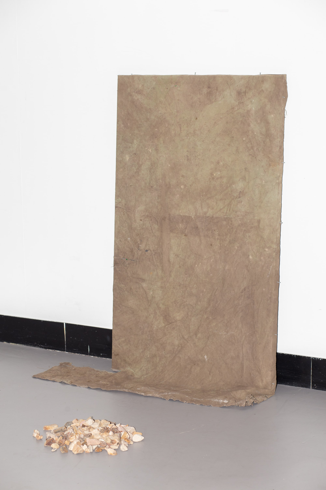
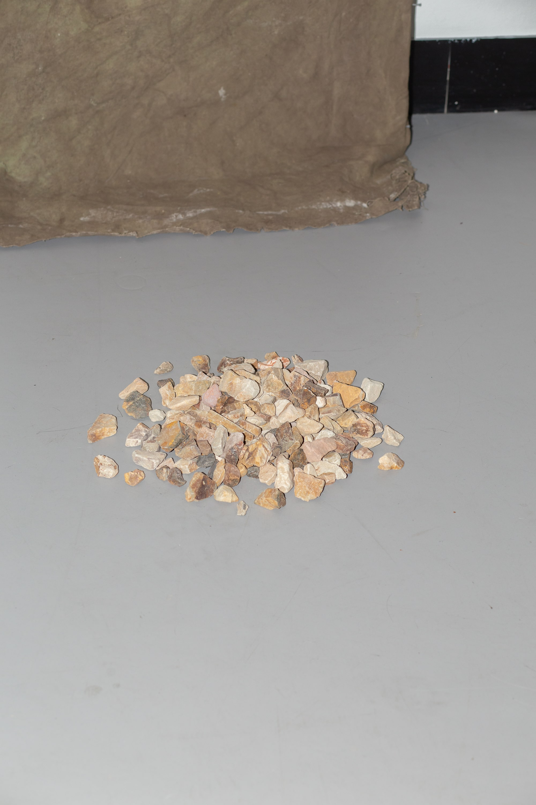

Silver Halide (2022)
Zachariah Micallef
Mixed Media Installation (Canvas, Soil, Nails, Wooden Frame, Stone)
Photography fails to fully encapsulate the plethora of events that have and continue to eventuate on the other side of the lens. Although raw photographic information - whether it exists as latent film or digital code - holds a direct relationship to what it represents, by transposing that information into a visual object it no longer holds a direct indexical relationship.
'Silver Halide' asks what an image looks like when non-human objects are given agency over their own representation. The work began as a blank canvas wherein it was then buried underground for 6 weeks before being unearthed and mounted. The resulting aggregate of minerals and elements on the surface of the canvas act as an 'exposure', allowing the landscape to act independently in deciding what is visually inscribed on the surface and what information remains invisible.
By reconsidering the mechanisms of photography, 'Silver Halide' acts as an image-object which depicts landscape no less truthfully than traditional photography.


'Silver Halide', 2022 (Detail), Image Courtesy the Artist